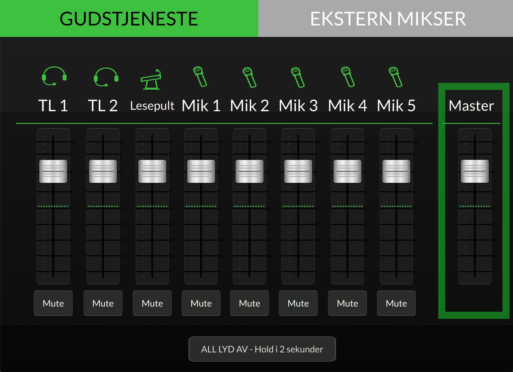

Denne veiledningen er under arbeid. Enkelte bilder og opplysninger mangler.
Brandval kirke
Her finner du det du trenger for å bruke lyd og lys i kirken, og praktisk informasjon for deg som skal ha et arrangement her.
Hva skal du gjøre?
- BildePanelet i koret, nederst på høyre side1
Trykk på skjermen i koret, nederst på høyre side.
- BildeSkjermen med «Gudstjeneste»-knappen2
Trykk «Gudstjeneste».
Dette programmet brukes til nesten alt: gudstjeneste, begravelse, vielse og dåp.
- BildeMikrofonskapet åpent, mikrofonene synlige3
Hent en trådløs mikrofon i skapet foran i koret, og skru den på.
Lesepultmikrofonen er alltid klar. Den trenger du ikke skru på.
- BildeTaler med hodebøyle ved alteret4
Snakk som vanlig. Lyden er ferdig innstilt for hele kirken.
Er det for svakt eller for sterkt? Juster feideren for mikrofonen på panelet.
Hold «ALL LYD AV» inne i 2 sekunder. Skru av mikrofonen og legg den tilbake i skapet.
- BildeDe to XLR-kontaktene i skapet, merket V/H1
Koble mikseren til de to kontaktene merket V og H i skapet foran i koret.
- BildeSkjermen med «Ekstern mikser»-knappen2
Trykk «Ekstern mikser» på panelet i koret.
Nå går lyden fra mikseren ut i kirkens høyttalere.
- BildeStikkontakter nær koret3
Trenger du strøm til utstyret? Se Praktisk lenger ned.
Hold «ALL LYD AV» inne i 2 sekunder og koble fra mikseren.
- BildeSkjermen med «Gudstjeneste»-knappen1
Trykk «Gudstjeneste» på panelet i koret.
- BildeSolistmikrofonen ved orgelet2
Solisten bruker den trådløse solistmikrofonen. Den ligger hos organisten.
- BildeMikrofonuttak med nummer synlig3
Kor og instrumenter kobles til mikrofonuttakene «Mik 1–5».
Hvor uttakene er, ser du under Finn fram.
- BildeFeiderne for Mik 1–5 på skjermen4
Juster med feiderne «Mik 1–5» på panelet.
Hold «ALL LYD AV» inne i 2 sekunder. Legg solistmikrofonen tilbake hos organisten.
Hvor er det?
Trykk på et nummer for å se bilde og forklaring.
I koret, nederst på høyre side. Her slår du lyden av og på.
Foran i koret. Her ligger de trådløse mikrofonene, og her kobler lydteknikere til egen mikser.
I koret, nederst på høyre side. Mikrofonen er fast montert og alltid klar.
Solistmikrofonen ligger hos organisten.
I koret, nederst på høyre side. For kor og instrumenter.
Legges inn
Ikke plassert på tegningen ennå
Også nødutgang.
Legges inn
Ikke plassert på tegningen ennå
Legges inn
Ikke plassert på tegningen ennå
Legges inn
Ikke plassert på tegningen ennå
Slik ser panelet ut
I koret, nederst på høyre side. Bokstavene på bildet er forklart under.

ABCDEKnappen som lyser grønt, er valgt.
- Gudstjeneste
- Brukes til nesten alt: gudstjeneste, begravelse, vielse og dåp.
- Ekstern mikser
- Når en lydtekniker har med egen mikser.
Én feider for hver mikrofon. Bruk dem bare hvis noe er for svakt eller for sterkt. Skyv opp for sterkere, ned for svakere.
- TL 1
- Trådløs mikrofon 1 (hodebøyle)
- TL 2
- Trådløs mikrofon 2 (hodebøyle)
- Lesepult
- Mikrofonen på lesepulten
- Mik 1–5
- Mikrofonuttak for kor og instrumenter
Slår av lyden fra én mikrofon. Trykk en gang til for å slå den på igjen.
Volum for hele kirken.
Etter bruk: hold knappen inne i 2 sekunder.
Lys i kirken
Lyset i kirkerommet slås av og på med vanlige brytere. Det er ingen dimming eller lysprogrammer.
Skal du ha eget lys til en konsert? Se strøm og rigging under Praktisk.
Praktisk informasjon
For deg som skal ha et arrangement i kirken. Informasjonen er levert av Brandval kirke.
Fylles ut av kirken
Fylles ut av kirken
Fylles ut av kirken
Fylles ut av kirken
Fylles ut av kirken
Fylles ut av kirken
Fylles ut av kirken
Fylles ut av kirken
Fylles ut av kirken
Fylles ut av kirken
Fylles ut av kirken
Noe virker ikke
Mikrofonen gir ingen lyd
Sjekk at mikrofonen er skrudd på. Se etter om «Mute» lyser for mikrofonen på panelet. Blinker lampen på mikrofonen, må batteriet byttes.
Det hyler eller piper
Skyv mikrofonen litt ned på panelet. Ikke gå rett foran høyttalerne med mikrofonen.
Skjermen på panelet er svart
Trykk på skjermen. Hjelper ikke det, ring teknisk support.
Det kommer ingen lyd fra mikseren
Sjekk at «Ekstern mikser» er valgt på panelet, og at kablene står i kontaktene merket V og H.
Må vi justere lyden underveis?
Nei. Lyden er innstilt for hele kirken. Bruk feiderne bare hvis noe er for svakt eller for sterkt.
Teknisk informasjon
Lydanlegget er levert som Kirkelydpakken av Danbolt i 2026. Eksisterende høyttalere og forsterker er videreført og optimalisert i ny lydprosessor.